网络经济与企业管理这本书讲的主要是企业在传统方式和网络环境下企业在战略，客户关系，组织，市场营销，运作，财务管理，人力资源，知识，供应链和文化等方面的管理方式的不同和发展，通过对每一章的总结和理解画了几张导图希望大家指导：
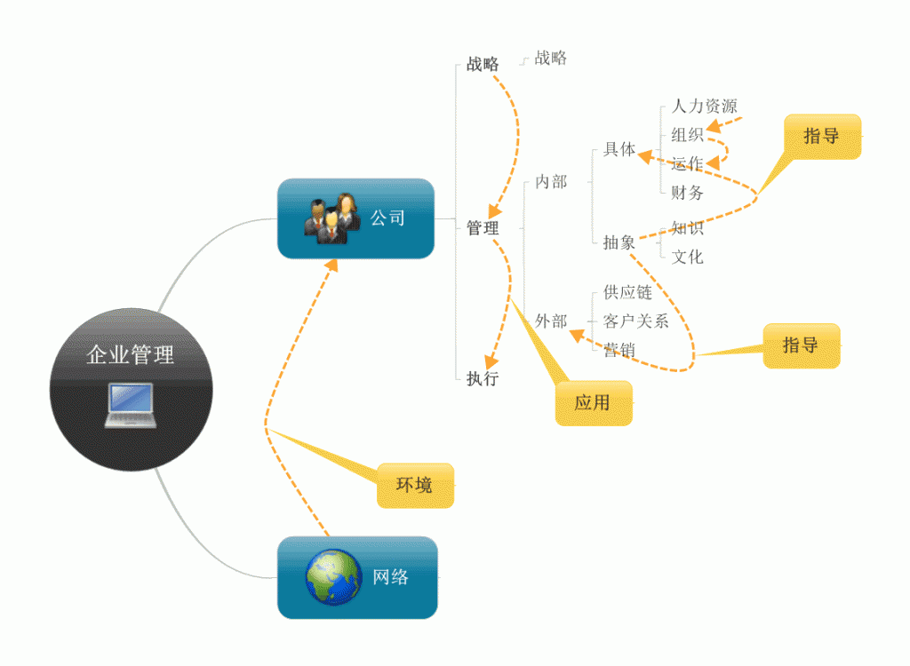
对于战略管理主要是针对高层领导者来说的，着眼于企业的未来，为企业的生存和发展而进行的带有全局性，根本性和长远性的谋划。
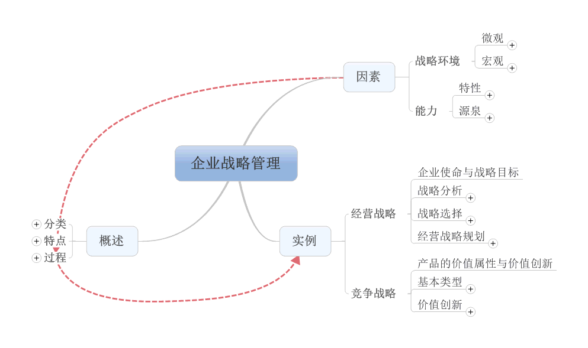
随着Internet应用的迅速发展，信息技术的推动和经营理念的更新，树立的以客户为中心的理念，使企业更加重视与客户间的关系。
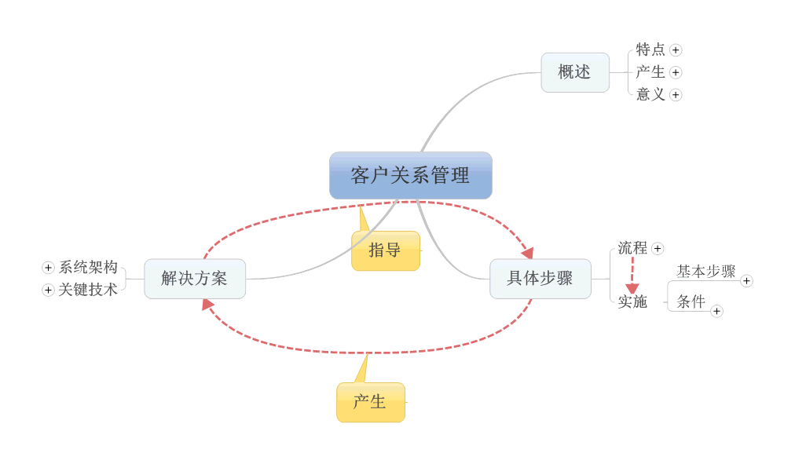
企业组织管理是为了有效的配置企业内部有限资源，实现共同目标而按照一定的规划和程序构成的责权结构安排和人事安排。
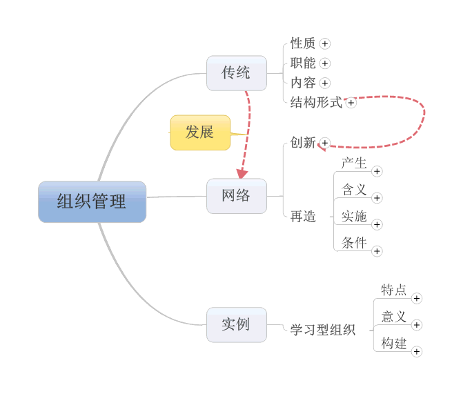
市场营销管理就是在变化的市场环境中，为满足消费者的需要，实现企业的目标而进行的商务活动过程。
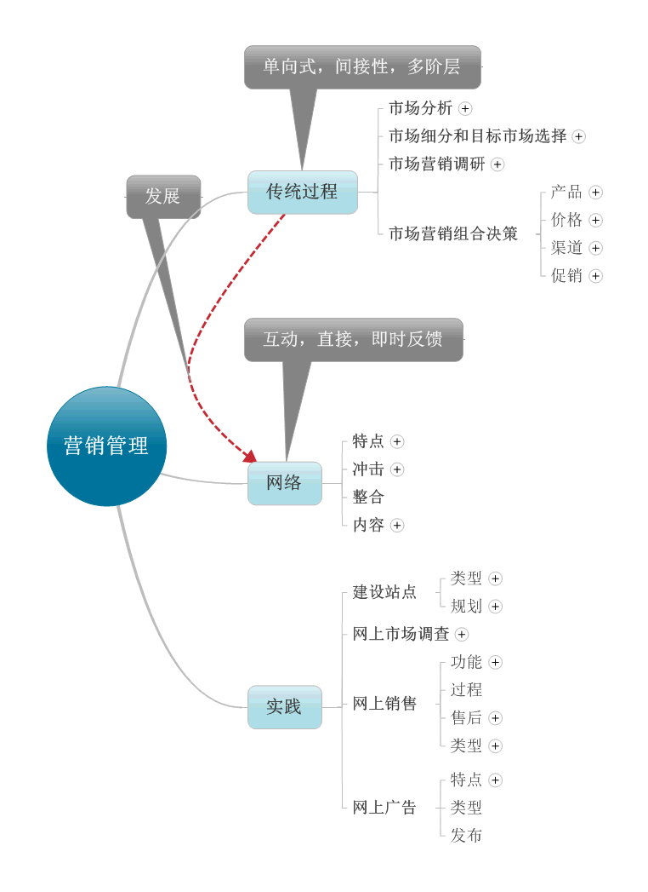
企业为了达成其目标，对运作系统与运作过程进行计划，组织与控制等一系列的管理工作。
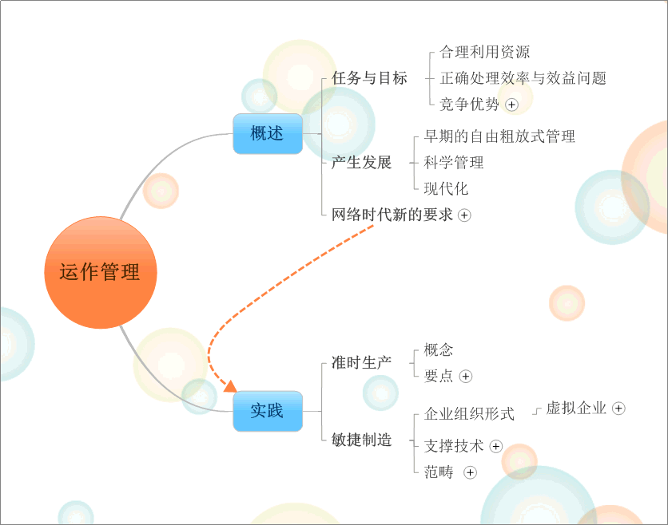
企业为了实现企业价值最大化，对生产经营活动中所需的各种资金的筹集，运用，回收与分配，要进行计划，组织，协调与控制管理。
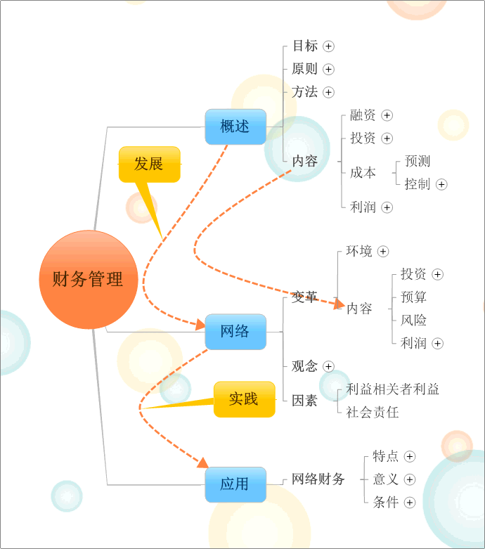
随着社会发展，人力资源的知识技术因素对社会的发展和组织的成功作用越来越大，企业运用科学的方法，对人力资源进行获取与配置，培训与开发，考核与激励，规范与约束，安全与保障，凝集与整合，最终实现企业目标和员工价值。
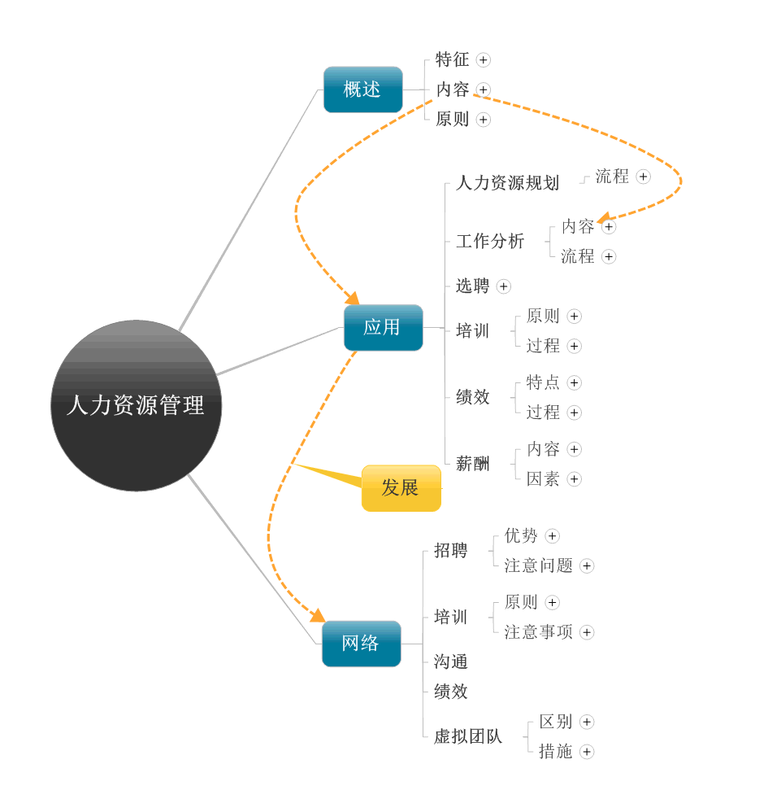
知识是企业最重要的战略资源，企业通过有计划，有目的地构建企业内部，外部知识网络进行学习，有效的实现知识的互相转换，提高企业的学习能力，应变能力等。
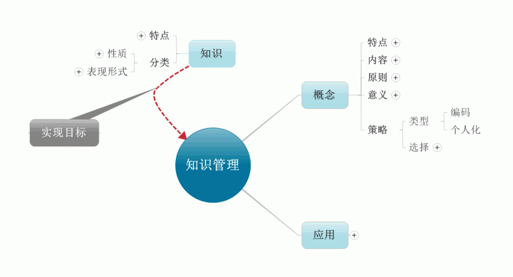
由于树立的“以顾客为中心”的经营理念，为了给顾客提供满意的产品或服务，从全局的角度对供应链上的物流，信息流，资金流以及各个链条进行优化配置，提高企业的竞争力。
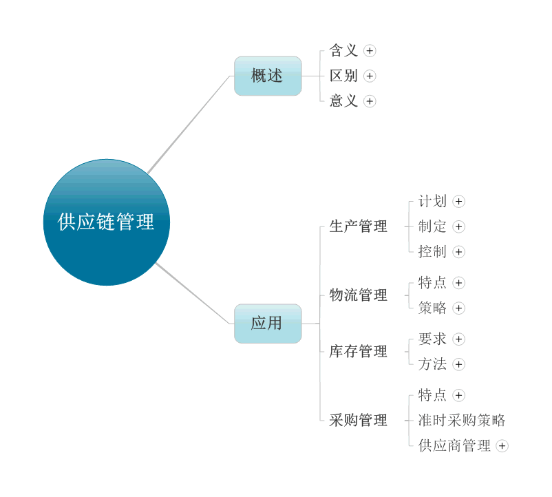
企业文化是社会文化与组织管理实践相融合的产物，是企业的灵魂，良好的企业文化是企业生存发展的源动力，是区别竞争对手的最根本标志。
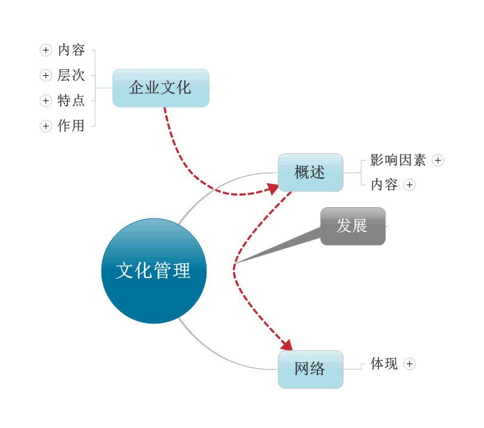
根据对整本书的学习，使我们从不同方面了解了企业的运作与发展，为了实现企业价值最大化这个目标，对企业的生产经营活动及资源进行合理的配置和有效整合（即以上的各个方面的管理），通过计划，组织，领导，控制等活动来实施。